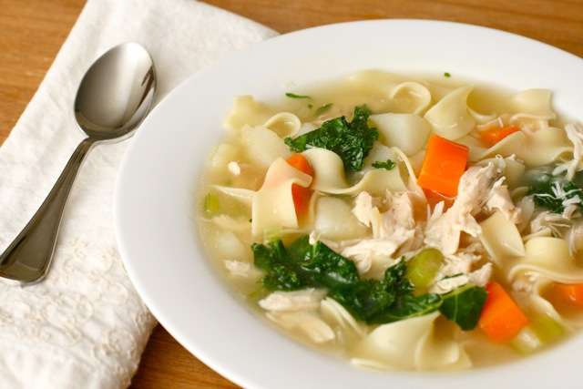

Insta Pot Chicken Noodle Soup

Description
This chicken noodle soup is so darn good, it will leave you wanting more that's for sure!
Savory chicken and farm fresh vegetables in a delicious stock with a blend of herbs and spices.
Ingredients
- 2 tablespoons salted butter
- 3 carrots, or more to taste, peeled and sliced
- 3 stalks celery, or more to taste, chopped
- 1 medium onion, chopped
- 1 teaspoon ground thyme
- 1 teaspoon dried oregano
- 1 teaspoon salt, or to taste
- ½ teaspoon ground black pepper, or to taste
- 4 cups chicken broth
- 4 cups water
- 4 cubes chicken bouillon
- 2 bay leaves
- 1 pound frozen skinless, boneless chicken breast halves
- 1 (8 ounce) package thin egg noodles
- 1 tablespoon dried parsley
Directions
- Turn on a multi-functional pressure cooker (such as Instant Pot®), select Saute function, and add butter. Add carrots, celery, and onion to the melted butter; saute until soft, 3 to 5 minutes. Stir in thyme, oregano, salt, and pepper. Cancel Saute function.
- Stir in chicken broth, water, bouillon cubes, and bay leaves. Add frozen chicken breasts. Close and lock the lid. Select high pressure according to manufacturer's instructions; set timer for 12 minutes. Allow 10 to 15 minutes for pressure to build.
- Release pressure using the natural-release method according to manufacturer's instructions, 10 minutes. Switch to the quick-release method according to manufacturer's instructions, about 5 minutes. Unlock and remove the lid.
- Remove chicken from the pot. Carefully chop or shred the meat, and add back to the pot.
- Select Saute function and add egg noodles. Cook until noodles are tender yet firm to the bite, 8 to 10 minutes. Stir in dried parsley and serve.